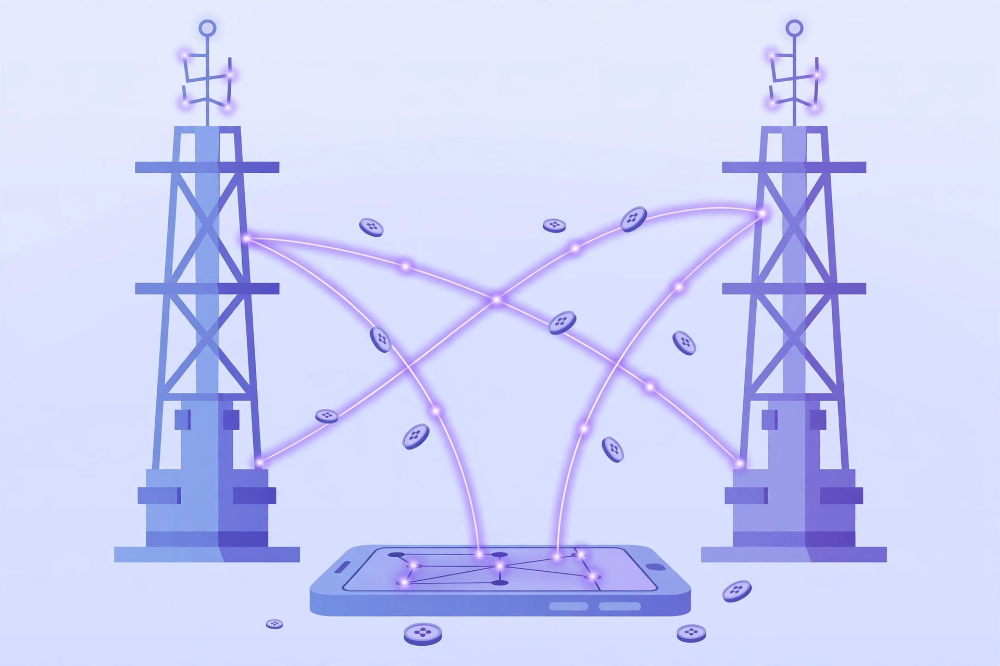

2026년 10월 27일

AI 경쟁이 모델 성능 싸움에서 '연결과 요금' 싸움으로 번지고 있습니다. 토큰은 AI가 글을 읽고 만드는 기본 단위인데, 이제 통신사들은 이 토큰의 흐름을 연결하고 정산하는 사업을 노리고 있습니다. SKT와 KT는 연말부터 새 사업을 본격화할 준비를 하고 있습니다.
두 회사의 방향은 다릅니다. SKT는 약 2,300만 명의 이동통신 고객을 바탕으로, 사용 패턴을 보고 알맞은 모델과 인프라에 연결해 주는 '토큰 게이트웨이'를 내세웁니다. 통신 요금 정산 노하우를 AI 사용료 정산으로 확장하겠다는 구상입니다.
KT는 비용 절감에 초점을 맞췄습니다. '토큰 팩토리'는 질문 난이도에 따라 알맞은 모델로 자동 연결해, 무조건 고성능 모델을 쓰지 않게 합니다. KT는 이를 통해 토큰 사용량을 16~20% 줄일 수 있다고 밝혔습니다.
사용자 입장에서는 "어떤 모델이 좋은지"보다 "내 질문에 알맞게, 합리적인 비용으로" AI를 쓰는 시대가 올 수 있습니다. 연말에 두 회사의 서비스가 실제로 어떻게 나오는지 지켜볼 만합니다.